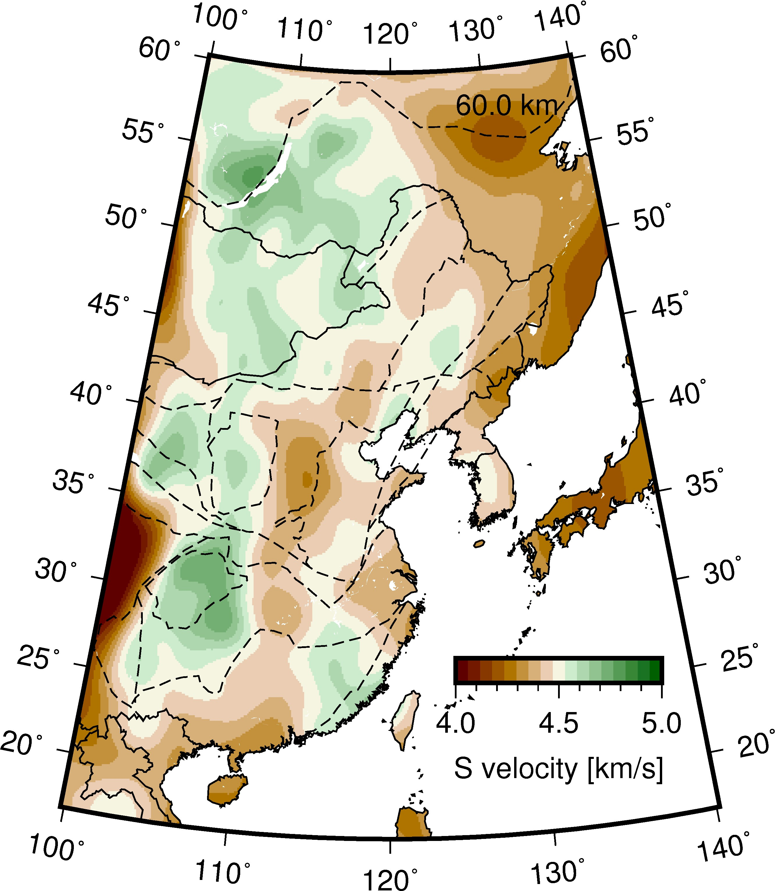

Eastern China Sn velocity¶
Description: The 3-D inverted Sn velocity beneath Eastern China and its surroundings from Sun and Kennett (2016).
Weijia Sun and B. L. N. Kennett, 2016, Uppermost mantle structure beneath eastern China and its surroundings from Pn and Sn tomography, Geophys Res Lett, 43(7), 3143–3149.
{kind=link}
1 2 3 4 5 6 7 8 9 10 11 12 13 14 15 16 17 18 19 20 21 22 23 24 25 26 27 28 29 30 31 32 33 34 35 36 37 38 39 40 | #!/bin/sh
gmtset FONT_ANNOT_PRIMARY=10p,Helvetica,black
gmtset FONT_ANNOT_SECONDARY=10p,Helvetica,black
gmtset FONT_LABEL=10p,Helvetica,black
gmtset FONT_LOGO=10p,Helvetica,black
gmtset FONT_TITLE=10p,Helvetica,black
gmtset MAP_FRAME_TYPE=plain
# basemap
# gmt psbasemap -JB120/36/17/55/8c -R99.787897/140.187896/16.772750/60.202748 -K -Bxa10 -Bya5 -BWSNE -P -Xc -Yc --FORMAT_GEO_MAP=dddF > dv60.0_clip.ps
# convert xyz to grd
gmt xyz2grd grid2dvd60.0.z -Gtemp.grd -I401.000000+/431.000000+ -ZLB -R99.787897/140.187896/16.772750/60.202748
gmt grdsample temp.grd -Gout.grd -I0.100000/0.100000 -nb
# plot velocity
gmt pscoast -JB120/36/17/55/8c -R99.787897/140.187896/16.772750/60.202748 -K -Gc > dv60.0_clip.ps
gmt makecpt -CaumantleS.cpt -T4.0/5.0/0.00001 > colors.cpt
gmt grdimage out.grd -JB120/36/17/55/8c -K -O -P -Ccolors.cpt -R99.787897/140.187896/16.772750/60.202748 >> dv60.0_clip.ps
gmt psscale -Ccolors.cpt -Ba0.5f0.1+l'S Velocity [km/s]' -D4c/-1c/7.5c/0.5h -O -K -P >> dv60.0_clip.ps
# coast
gmt pscoast -J -R -K -O -Q >> dv60.0_clip.ps
gmt pscoast -JB120/36/17/55/8c -R99.787897/140.187896/16.772750/60.202748 -W1/0.5p -N1/0.5p -N2 -K -O -Bxa10 -Bya5 -BWSNE >> dv60.0_clip.ps
# tectonic lines
gmt psxy China_tectonic.dat -JB120/36/17/55/8c -R99.787897/140.187896/16.772750/60.202748 -K -O -W0.5p,black,- >> dv60.0_clip.ps
# plot scale
gmt psscale -DjBR+w2.5c/0.3c+h -Ba0.5f0.1+l'S velocity [km/s]' -Ccolors.cpt -J -R -K -O -Xa-0.7c -Ya1.5c >> dv60.0_clip.ps
# label
echo 138.167896 58.031248 60.0 km > text.d
gmt pstext text.d -J -R -K -O -F+f10p+jTR >> dv60.0_clip.ps
# end
gmt psxy -J -R -O -T >> dv60.0_clip.ps
gmt psconvert -A -P -Tj -E720 dv60.0_clip.ps
gmt psconvert -A -P -Tf -E720 dv60.0_clip.ps
|